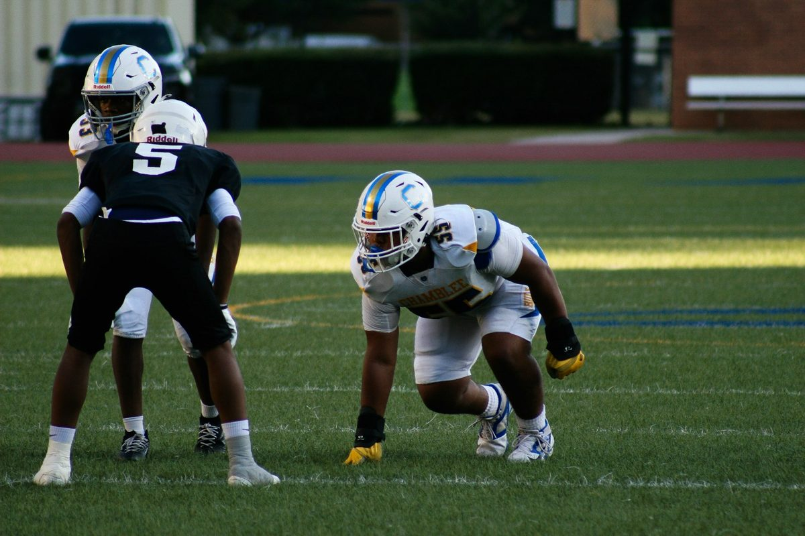

When a Neck Injury Makes the News
This weekend, an NFL linebacker was carried off the field with a neck injury and kept in the hospital overnight for monitoring. The team has not said what the injury is, and this article is not about him. But scenes like that raise a fair question for everyone else: when someone hurts their neck, how do clinicians figure out how serious it is?
The same questions apply after a car accident, a fall, or a sports collision. This article explains the steps, why a fracture and a ligament injury are different problems, and why a normal scan does not always settle things. It is educational information, not advice for any one person.
First, Rule Out the Emergencies
The first job after a significant neck injury is safety. Emergency teams use screening rules and an examination to decide who needs imaging right away. Warning signs include:
- Severe neck pain, or tenderness over the middle of the spine
- Numbness, tingling, or weakness in the arms or legs
- Trouble walking or balance problems
- Confusion, a loss of consciousness, or a head injury
- Loss of bladder or bowel control
If a serious neck injury is suspected, do not move the person's head or neck, and call 911. Moving someone with an unstable injury can make it worse.
A Broken Bone Is One Problem, a Ligament Injury Another
X-rays and CT scans are very good at showing fractures, and they are usually the first imaging done in an emergency. The neck, though, is held together by more than bone. Ligaments, joint capsules, and discs keep each vertebra aligned with its neighbors. When those tissues are stretched or torn, the bones can look fine in a still picture and still move more than they should.
That is why a "negative" scan after trauma answers one question, whether there is a fracture, and leaves another open, whether the neck is stable.
Worth knowing: A case series in the Korean Journal of Spine (2015) described four patients after traffic accidents whose neck instability was not evident on initial static imaging. The authors note that, in earlier research they cite, delayed or missed cervical spine injury occurred in roughly 5 to 20 percent of cases, and that about 30 percent of patients with ligament disruption had negative static X-rays and CT. This was a very small series, so it is a reason to stay alert and not a measure of how often it happens to you.
What an MRI Can and Cannot Tell You
An MRI shows discs, nerves, the spinal cord, and the soft tissues, and it can reveal swelling or injury in ligaments. It is taken while you lie still, so it shows how the tissues look and not how far one vertebra moves on the next. The same authors point out that MRI findings alone cannot establish instability, and that most patients with a posterior ligament injury on MRI do not need surgery. For more on this, see our article on why a normal MRI does not rule out neck instability.
How Motion Is Evaluated
When symptoms persist, or do not match the imaging, the next question is whether the neck moves normally. In the right situation this can include:
- History and examination. How you were hurt, what you feel, and what the exam shows decide whether motion testing is safe and likely to help.
- Flexion and extension X-rays. Images are taken with the neck bent forward and backward within a range you can manage.
- Measurement. Dr. Moore digitizes the images in Symverta software, which measures translation and angular motion at each level, and compares the numbers with published reference values.
- Explanation. The findings are reviewed with you in plain language, along with what they may mean for your care.
Timing matters. Right after an injury, pain and muscle guarding can limit how far the neck will move, and about 30 percent of patients with cervical trauma have limited motion, according to the same case series. So these films are used when the examination supports them, and they are avoided when movement is not safe. As with any X-ray, they involve radiation and are avoided during pregnancy.
What This Means If You Were Hurt in an Accident
Many people leave the emergency room with a normal X-ray or CT, a sore neck, and instructions to rest. That is often the right call for a fracture-free injury. But if your neck pain persists, if it feels unsteady, or if you have headaches, dizziness, or arm symptoms that do not settle, a follow-up evaluation is reasonable. You can read about how care after a collision works on our car accident care page, and about why symptoms are often delayed.
Who May Want an Evaluation
- Neck pain that lingers after a collision, fall, or sports injury
- A normal X-ray, CT, or MRI that does not explain how you feel
- A sense that the neck is unstable, heavy, or catches with movement
- Symptoms that follow neck movement, such as headaches or arm tingling
If you have severe pain, weakness, numbness, trouble walking, or loss of bladder or bowel control, seek emergency care first.
Where Dr. Moore's Training Fits
Dr. Moore is a Fellow in Primary Spine Care (FPSC) and has completed radiology mini-fellowships through SUNY Jacobs in neuroradiology, advanced MRI of the spine, and musculoskeletal radiology, along with training in X-ray digitization methodology. His practice focuses on spinal trauma. You can read more on the About page and the whiplash and trauma page.
Hurt in a collision? Call or text Dr. Moore directly at (251) 281-8768, any time of day. For emergencies, call 911.
Common Questions
What are the warning signs of a serious neck injury?
Severe neck pain after trauma, pain in the midline of the spine, numbness, tingling or weakness in the arms or legs, trouble walking, confusion, loss of consciousness, or loss of bladder or bowel control all call for emergency care. If a serious neck injury is suspected, do not move the person's head or neck and call 911.
Can a neck injury be serious if my X-ray and CT were normal?
Yes. X-ray and CT are excellent for fractures but can miss ligament injuries, because they are taken at rest. In one small published case series, the authors cite earlier research in which about 30 percent of patients with ligament disruption had negative static X-rays and CT. A normal scan is reassuring about fractures, not a guarantee that the neck is stable.
What is the difference between a fracture and a ligament injury?
A fracture is a break in a vertebra. A ligament injury is a stretch or tear of the tissues that hold the vertebrae together. Ligament injuries can leave the bones aligned at rest while allowing too much motion when the neck moves.
When are flexion and extension X-rays used?
They are considered when symptoms persist or do not match other imaging, and when your examination suggests they are safe and likely to be useful. They are not done right away in every case, and they are avoided when pain, muscle guarding or red flags make movement unsafe.
References
Yeo CG, Jeon I, Kim SW. Delayed or Missed Diagnosis of Cervical Instability after Traumatic Injury: Usefulness of Dynamic Flexion and Extension Radiographs. Korean J Spine. 2015;12(3):146-149. Full text.